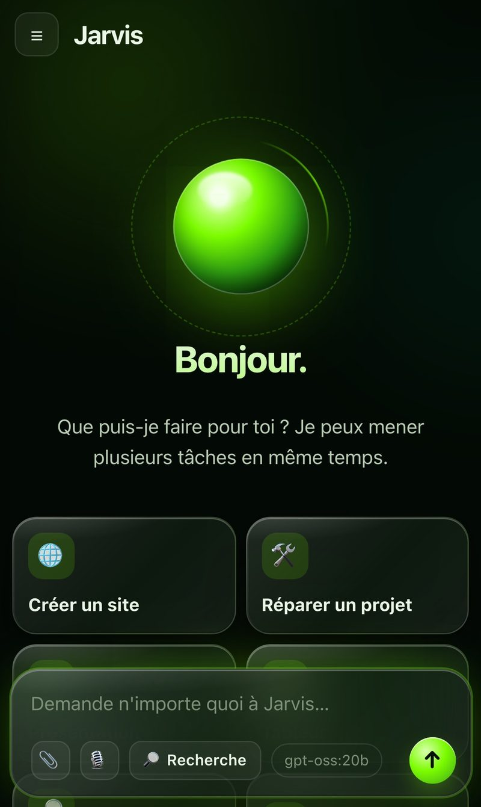
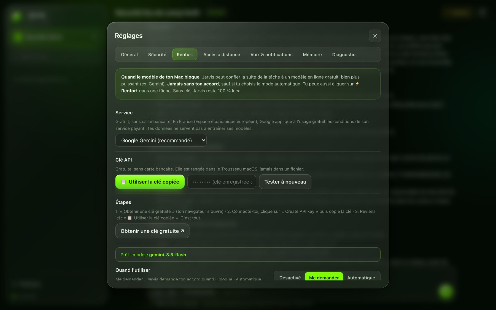
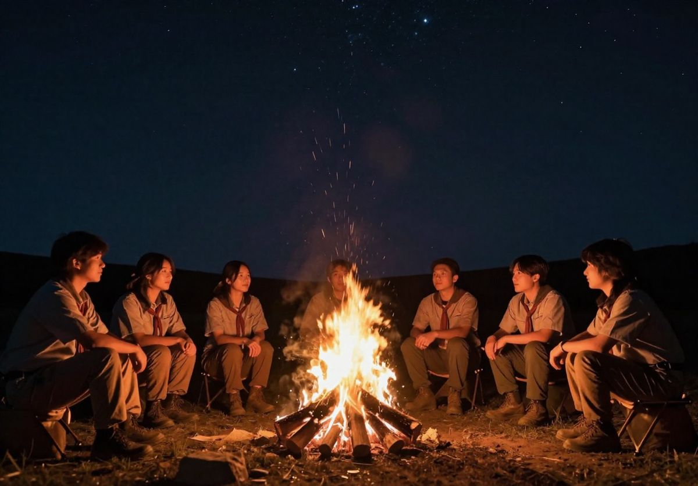

Raphaël
Flipo.
Commercial et marketeur de métier, je construis aussi les produits que je vends. En alternance en BUT Techniques de commercialisation et chez Florimond Deprez, je lance deux projets : La Boussole, l'appli qui organise les déplacements des associations, et Jarvis, un agent IA qui travaille en local sur Mac.

Deux produits,
une même idée : faire gagner du temps.
Les déplacements qui rassemblent : événements, covoiturage et réservation de places pour les clubs, associations et groupes scouts.
Un agent IA autonome qui tourne sur le Mac : il planifie, utilise de vrais outils, vérifie son travail. Gratuit, privé, pilotable depuis l'iPhone.
Moins d'organisation.
Plus de moments à partager.
Une sortie, des conducteurs volontaires, des places à réserver. La Boussole rassemble les déplacements d'une association dans un espace privé, pour ne plus recouper les messages et les tableaux à la dernière minute.

Préparer
Un titre, une date, un lieu de rendez-vous public et un groupe. Les responsables rendent le départ lisible pour tout le monde.
Partager
Une invitation, une adhésion approuvée. Les membres retrouvent leur association, même s'ils en suivent plusieurs.
Réserver
Les conducteurs proposent leurs places, les participants réservent et peuvent annuler. Les disponibilités suivent en direct.
Événements clairs
Date, lieu, consignes utiles. Les activités sont classées par groupe pour s'y retrouver.
Covoiturage et places
Proposer un trajet, réserver, annuler. La dernière place ne peut pas être attribuée deux fois.
Carte des trajets
Départs et points de rendez-vous sur une carte OpenStreetMap, sans service payant.
Rôles et accès
Propriétaire, administrateur, coordinateur, membre. Invitations révocables, adhésions approuvées.
Plusieurs associations
Un seul compte pour rejoindre plusieurs associations ; chaque espace reste privé et cloisonné.
Rappels intégrés
Les rappels restent dans l'application, sans SMS ni e-mail envoyé en masse.
Une seule base de code, quatre plateformes.
L'application est écrite en C++17 avec Qt 6 et QML, pour viser macOS, Windows, iOS et Android depuis le même code.
Les comptes et les données passent par Firebase Auth et Firestore, avec des règles de sécurité par association. La réservation de la dernière place se fait dans une transaction : si deux personnes cliquent en même temps, une seule l'obtient.
Le bon cadre,
à la taille du groupe.
Essayer le parcours à petite échelle.
- 30 membres · 1 groupe
- 5 événements · 20 trajets
- 1 responsable propriétaire
- Réservations et annulations
- Export de ses données personnelles
Pour les clubs et associations actifs.
- 150 membres · 5 groupes
- 100 événements · 300 trajets
- Gestion avancée des membres
- Tableau de bord et indicateurs
- Rappels dans l'application
Pour plusieurs groupes et responsables.
- 500 membres · 20 groupes
- 500 événements · 1 000 trajets
- Jusqu'à 5 responsables
- Coordinateurs et permissions avancées
- Exports des données de l'association
Tarifs de lancement indicatifs, par association. Aucun paiement n'est encore actif pendant la bêta.
Votre association veut essayer ?
Je cherche quelques structures pilotes — un club sportif, une association locale, un groupe scout — pour tester La Boussole sur une vraie sortie et l'améliorer avec vous.
Proposer mon associationUn agent IA autonome
qui vit sur ton Mac.
Jarvis reçoit une demande en langage naturel, planifie, utilise de vrais outils — fichiers, terminal, Word, Excel, PowerPoint, navigateur, Git, Calendrier — vérifie son propre travail, puis rend le résultat. Les modèles tournent en local, gratuitement ; un renfort en ligne gratuit n'intervient qu'avec ton accord.





Moteur local sur Apple Silicon
gpt-oss-20b via MLX, environ 40 jetons/s. La sortie brute au format Harmony est analysée en streaming, pour un texte en direct sans fragments.
Seulement les outils utiles
15 outils de base, puis les familles détectées dans la demande. Le préfixe reste dans le cache du modèle : la première action passe de 45 s à 2–6 s.
Il vérifie avant de rendre la main
Un contrôleur relit la demande et l'état réel du disque (fichiers, taille, diapos…). S'il manque quelque chose, l'agent repart avec la consigne précise.
Notifications chiffrées, codées à la main
Web Push RFC 8291 (ECDH P-256, HKDF, AES-GCM) et VAPID en JWT ES256, sans bibliothèque de push.
Sécurité par défaut
Commandes en bac à sable, secrets dans le Trousseau macOS, journal d'audit et bouton « Annuler les modifications ».
Licence MIT. Installateur fourni pour les Mac Apple Silicon.
Python · FastAPI · Swift · JavaScript · MLX · Ollama · PlaywrightDu terrain au produit.
Partir du client
Je viens de la vente. Je commence par le problème de la personne en face — un responsable bénévole, un commercial, un client — avant de penser technique.
Construire vite, avec l'IA
Je conçois le produit et l'expérience, et je pilote des assistants IA de code pour passer rapidement de l'idée à une version qui tourne.
Prouver que ça marche
Tests automatiques, bancs d'essai, mesures de vitesse : je présente ce qui a été vérifié, et je dis clairement ce qui reste en bêta.
Expérience professionnelle
Commercial, responsable marketing et communication
- Responsable de projets marketing internes
- Assistant commercial BtoB, spécialité betterave fourragère et sucrière
- Développement d'un CRM, code en Swift et C/C++
- Montage photo et vidéo
- Organisation de réunions et de présentations
Commercial et directeur communication / marketing
- Prospection commerciale
- Vente terrain BtoB et BtoC, sur site et sédentaire
- Direction de la communication
- Mise en place des stratégies commerciale, communication et marketing
Stage commercial
- Prospection commerciale
- Accueil des clients
- Remise des véhicules
Chef de troupe scout
- Direction et responsabilité d'un groupe de jeunes
- Encadrement et management de chefs assistants
Formation
Compétences
Langues
Centres d'intérêt
Professional experience
Salesperson, Marketing & Communication Manager
- Internal marketing project manager
- B2B sales assistant, specialising in fodder and sugar beet
- CRM development, coding in Swift and C/C++
- Photo and video editing
- Organising meetings and presentations
Sales Representative & Communication / Marketing Director
- Business prospecting
- Field sales B2B and B2C, on-site and office-based
- Communication management
- Implementation of the sales, communication and marketing strategies
Sales Intern
- Sales prospecting
- Customer reception
- Vehicle handover
Scout Troop Leader
- Youth leader and supervisor
- Supervising and managing assistant leaders
Education
Skills
Languages
Interests
Un projet ?
Parlons-en.
Tester La Boussole
Une démonstration de 20 minutes, puis un pilote sur une vraie sortie de votre structure.
Commerce et marketing
Prospection, stratégie de communication, réseaux sociaux, contenus photo et vidéo.
Outils sur mesure
Une appli, un outil interne ou une automatisation avec l'IA, du besoin jusqu'à la version qui tourne.